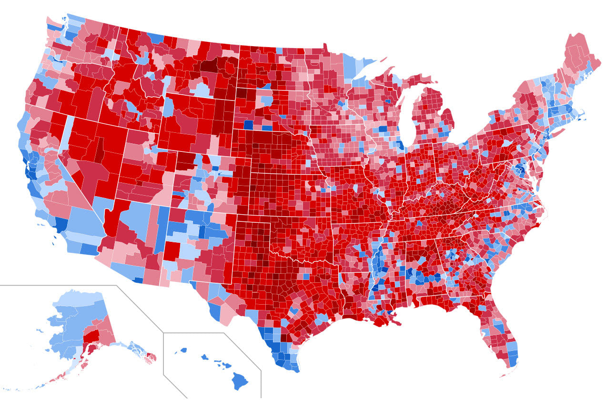

test
2023-10-11
INFO 532: Advanced Geographic Information Systems Fall 2023

This Advanced GIS Fall 2023 class is a project-based exploration of advanced topics in GIS and geospatial technology, with a focus on spatial modeling, advanced spatial analysis and geoprocessing, spatial data manipulation, and geocomputation. For information on course expectations, assignments, grading, and schedule, please review the course syllabus listed on Canvas. We will use this e-book for lectures, and in-class activities. All course content will be housed in this book for your reference.
Advanced GIS analysis methods covered in this course include: (1) spatial data wrangling, (2) point data analysis, (3) area data analysis, (4) raster data, (5) spatial interpolation, (6) spatial autocorrelation.
There are two sections to this class (in-person and asynchronous). Synchronous sessions meets Mondays and Wednesdays 10:00-11:50 am in GCR P45. The in-person session classes are broken down into 2 components. The first half of the class will be lecture, and the second half of the class will be used as “lab-time” for you to work on projects. Students enrolled in the asynchronous are welcome to join the in-person class when they can if extra help is needed.
About the class
Prerequisites
INFO 530 completion. Many of the concepts learned in INFO 530 will carry forward into this class.
R and RStudio installation. We will use R as our programming language for this course.
Not required but may be helpful:
- Brunsdon, C. (2018). An introduction to r for spatial analysis and mapping (2nd edition). SAGE Publications.
- Comber and Brunson (2021) Geographical Data Science and Spatial Data Analysis: An Introduction in R. Sage. London.
Grading
- 4 labs: 40% (one lab per week)
- 1 Case Study report (and presentation for in-person class): 50%
- Participation in class activities, discussion boards, etc. (required): 10%
Labs
- Use RStudio and turn in a Markdown file.
- Post HW on Canvass
- Labs are due Wednesday 10 AM.
- Important Start your filename with your NAME! PLEASE PLEASE PLEASE PLEASE
- This is a project-based class. You will br assigned a case-study of interest, which contains both point and area data. Each lab will consist of taking the learned topics discussed in each module and applying it to your project application. We will define the exact output to be submitted for each lab.
How do I get help?
- Direct emails can get lost so send messages through Canvas.
- Post questions on discussion board for labs. Others may have the same question.
- If you have a similar question to one posted, please tag that post.
- If you know the answer to a posted question, please feel free to post a response.
- Links can be especially helpful for students, TAs, and instructor.
- I will do MY BEST to check for posts/emails each morning and evening and during office hours.
- **Important: Do not wait until last minute. TA and instructor may not be available to answer questions the morning labs are due.*
- Please send me an email to schedule time during my office hours.
- Real life is important. If you are having trouble with the course, or if you need some added flexibility due to real life, feel free to come to me, and I will accomodate as best I can.
Instructor E-mail: (emily.nancy.peterson@emory.edu)
TA E-mail: (amy.moore@emory.edu)
Diversity and Inclusion Statement
At its core, this course embraces a multiplicity of voices and perspectives. We respect people from all backgrounds and recognize the differences among ourselves, including racial and ethnic identities, religious practices, and gender expressions. Please let me know what name you like to be called and your gender pronouns.
We all come from different backgrounds and interests. In this course, it is essential to be inclusive of all who have come to learn. We all can learn from one another, and this is a safe space to share our views and educate one another on accepting and inclusive language.
Please use NAMECOACH on Canvas to help learn how to say your name, and please bare with me if I do not get it easily. I have a terrible memory.
Using this notebook
This notebook contains the lectures for the class. All lectures will be recorded and uploaded to Canvas for each module. At the end of each module a lab assignment is included.
Important: This notebook will be revised and edited throughout the semester depending on the pace of the class and additional notes that may be found helpful.

This eBook is licensed under the Creative Commons Attribution-NonCommercial-ShareAlike 4.0 International License.